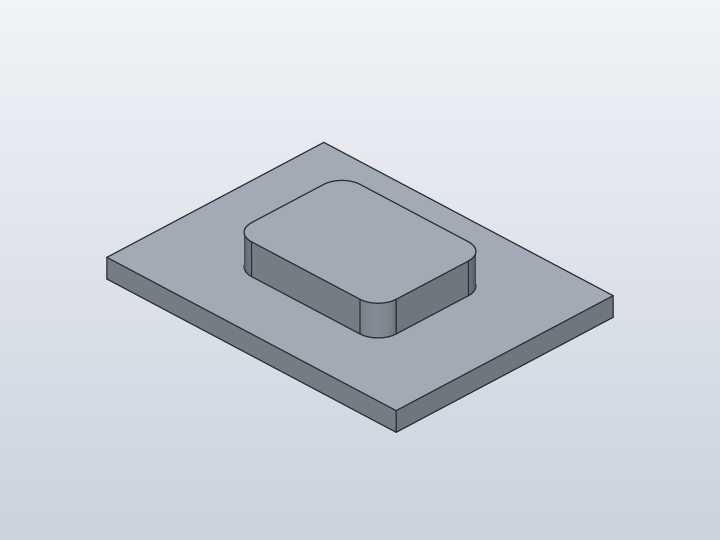
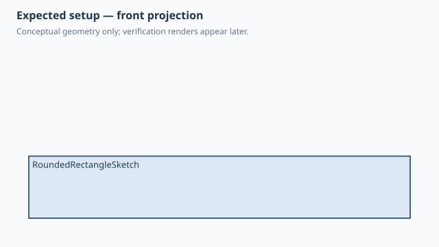
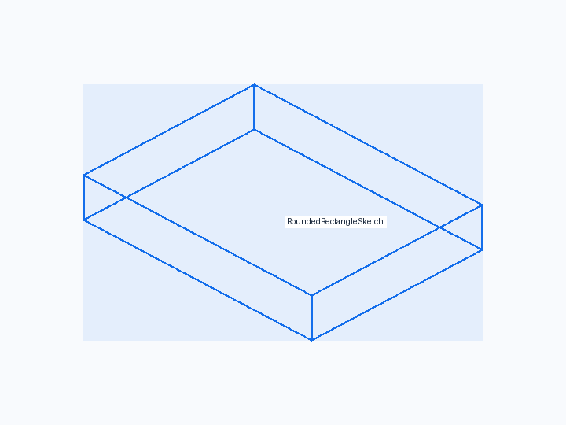
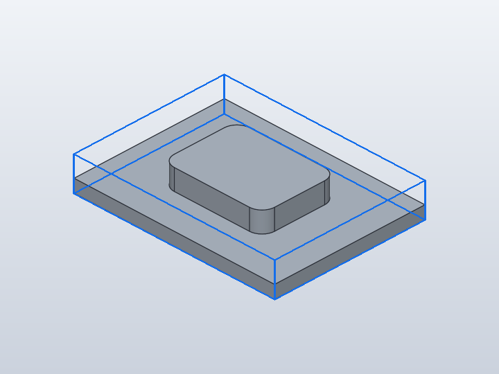
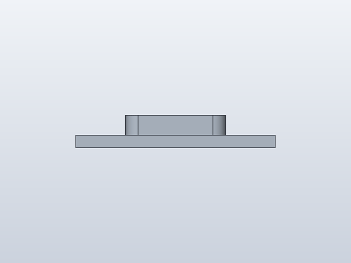
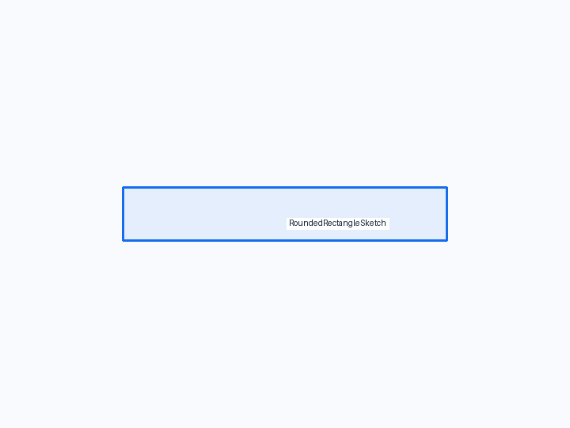
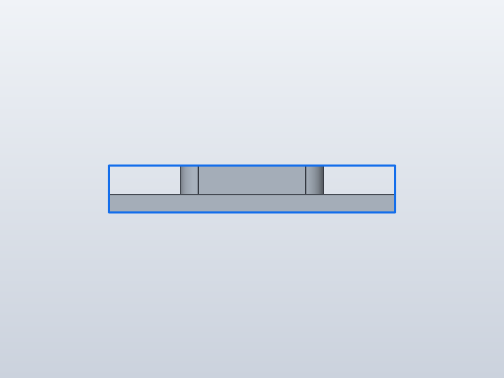
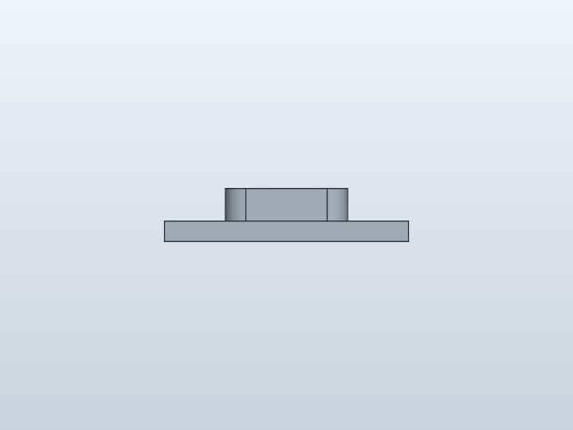
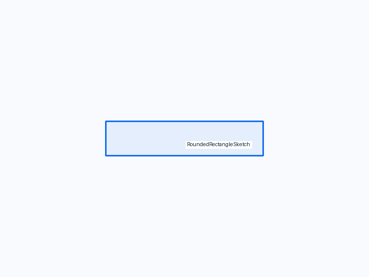
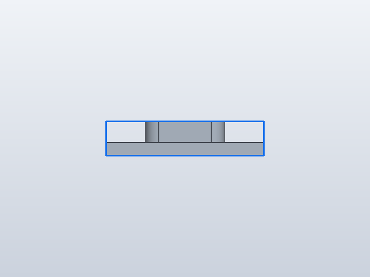

Forge qualification case
Explicit rounded-rectangle sketch pad

1. Test setup

Test goal
Qualify RoundedRectangle2D in the explicit named Sketch API using true native rounded-rectangle sketch geometry.
Pass criteria
One joined body spans 80 x 60 x 13 mm; the saved Rounded pad sketch remains a single closed profile built from four lines and four circular arcs.
2. Implementation under test
Fixture source
"""Qualification: RoundedRectangle2D in an explicit named Sketch."""
class RoundedRectangleSketch:
base_width = 80.0
base_depth = 60.0
base_height = 5.0
pad_width = 40.0
pad_depth = 30.0
radius = 5.0
pad_height = 8.0
def build(self):
body = Box(self.base_width, self.base_depth, self.base_height)
with Sketch(name="Rounded pad", on=body) as pad:
pad.add(
RoundedRectangle2D(
self.pad_width,
self.pad_depth,
self.radius,
),
offset=(-20, -15),
)
return body + pad.extrude(self.pad_height)
RoundedRectangleSketch()
Public Forge API used
with Sketch(name='Rounded pad', on=body): add(RoundedRectangle2D(...)); body + sketch.extrude(...)
Forge model represented by this fixture
One 80 x 60 x 5 mm base plate plus a centered 40 x 30 mm rounded-rectangle pad with 5 mm corner radius and 8 mm height.
3. Generated SolidCraft relationship
The named explicit Sketch emits one sketch.rectangle.rounded with true arc corners, then a native solid.extrude(operation='join').
Show generated relationship / command details
parameters.add
parameters.add
parameters.add
parameters.add
parameters.add
parameters.add
parameters.add
solid.box
sketch.create
sketch.rectangle.rounded
sketch.finish
solid.extrude4. Machine verification
Baseline · 1 bodies · measurements.json
Parameters
| Name | Value |
|---|---|
base_width | 80.0 |
base_depth | 60.0 |
base_height | 5.0 |
pad_width | 40.0 |
pad_depth | 30.0 |
radius | 5.0 |
pad_height | 8.0 |
d5 | 5.0 |
Bodies
| Body | BBox min | BBox max |
|---|---|---|
| RoundedRectangleSketch | [-40, -30, 0] | [40, 30, 13] |
Semantic validation
| Status | Level | Check | Expected | Actual |
|---|---|---|---|---|
| PASS | Q4 | declared target geometry | [{"label": "RoundedRectangleSketch", "min": [-40, -30, 0], "max": [40, 30, 13]}] | [{"min": [-40.0, -30.0, 0.0], "max": [40.0, 30.0, 13.000000000000005]}] |
| PASS | Q4 | single joined rounded-pad body | 1 | 1 |
| PASS | Q4 | rounded sketch pad bounds | {"min": [-40, -30, 0], "max": [40, 30, 13]} | {"max": [40.0, 30.0, 13.000000000000005], "min": [-40.0, -30.0, 0.0]} |
| PASS | Q4 | four true rounded corner faces | 4 | 4 |
| PASS | Q4 | rounded pad sketch remains one solved eight-curve profile | {"curves": 8, "profiles": 1, "status": "solved", "dof": 0} | {"curves": 8, "dof": 0, "id": 2, "name": "Rounded pad", "profiles": 1, "status": "solved", "visible": false} |
| PASS | Q4 | explicit rounded sketch remains distinct native history | [["BoxFeature", "Box1"], ["Sketch", "Rounded pad"], ["ExtrudeFeature", "Rounded pad"]] | [["BoxFeature", "Box1"], ["Sketch", "Rounded pad"], ["ExtrudeFeature", "Rounded pad"]] |
5. Visual verification
Iso
Current SolidCraft iso view

Expected geometry in the same iso view

Expected geometry over the actual iso view
Additional front/right views
Front

Current SolidCraft front view

Expected geometry in the same front view

Expected geometry over the actual front view
Right

Current SolidCraft right view

Expected geometry in the same right view

Expected geometry over the actual right view
6. Evidence and references
Raw evidence
Show generated files and measurements
- Fixture source
- Generated command JSON
- results.json
- measurements.json
- joint-inspect.json
- model.sc
- model.step
- qualification-result.json
- validation.json
- visual-validation.json
- camera-front.json
- camera-iso.json
- camera-right.json
- Native snapshot: model.png
- Native snapshot: model-front.png
- Native snapshot: goal-front.png
- Native snapshot: overlay-front.png
- Native snapshot: visual-diff-front.png
- Native snapshot: model-right.png
- Native snapshot: goal-right.png
- Native snapshot: overlay-right.png
- Native snapshot: visual-diff-right.png
- Native snapshot: model-iso.png
- Native snapshot: goal-iso.png
- Native snapshot: overlay-iso.png
- Native snapshot: visual-diff-iso.png


Reference models
These comparisons clarify concepts; Forge does not promise API compatibility with them.
- SolidCraft: Native rounded sketch rectangles preserve true arc geometry and remain inspectable in the saved sketch.
- PythonSCAD: The explicit Sketch scope keeps 2D profile authoring separate from the subsequent 3D extrusion.